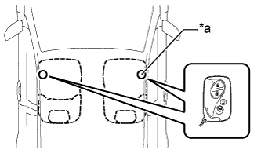
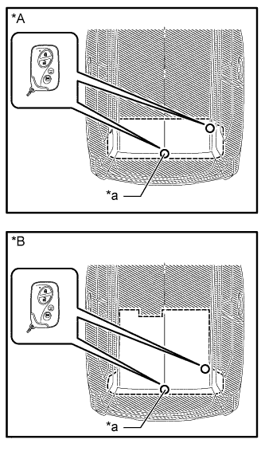

ENTRY AND START SYSTEM (for Entry Function) > OPERATION CHECK |
| CHECK ENTRY AND START SYSTEM (for Entry Function) OPERATION |
Check the entry unlock function (driver side door, front passenger side door).
Perform a wireless lock operation to lock all the doors, touch the unlock sensor built into the backside of the front door outside handle assembly of the driver side door while carrying the key and check that all the doors unlock.
 |
Inspect the entry unlock detection area. Hold the key at the same height as the front door outside handle assembly (approximately 0.8 m (2.62 ft.) from the ground) and approximately 0.7 m (2.30 ft.) from the vehicle as shown in the illustration and check that the LED (red) of the key blinks.
| *a | 0.7 to 1 m (2.30 to 3.28 ft.) |
With the system in unlock standby mode, hold the front door outside handle assembly and check that all the doors unlock.
 |
Check the unlock response sensitivity. With the system in unlock standby mode, touch the area shown in the illustration and check that the door unlocks.
| *1 | Unlock Sensor (Backside) |
Check the entry lock function (driver side door, front passenger side door).
|
With all the doors closed and unlocked, touch the lock sensor of the front door outside handle assembly of the driver side door while carrying the key and check that all the doors lock.
| *a | Approximately 0.3 m (0.98 ft.) |
Inspect the entry lock operating range. Hold the key approximately 0.1 m (0.33 ft.) below the bottom edge of the door glass (approximately 0.8 m (2.62 ft.) from the ground) and approximately 0.3 m (0.98 ft.) from the vehicle as shown in the illustration, touch the lock sensor and check that all the doors lock.
| *1 | Lock Sensor |
After the system enters unlock standby mode, touch the unlock sensor on the outside handle within 3 seconds. Check that the door unlocks.
Check the entry back door unlock function.
Perform a wireless lock operation to lock all the doors, operate the unlock switch of the back door electrical key switch while carrying the key and check that all the doors unlock.
| *1 | Unlock Switch |
| *a | Approximately 0.7 m (2.30 ft.) |
Inspect the entry back door unlock operating range. While standing at the rear of the vehicle, hold the key so that it is facing the direction shown in the illustration at the same height as the back door electrical key switch and approximately 0.7 m (2.30 ft.) from the vehicle, press the unlock switch of the back door electrical key switch and check that all the doors unlock.
Check the entry back door lock function.
With all the doors closed and unlocked, press the lock switch of the back door electrical key switch while carrying the key outside of the vehicle and check that all the doors lock.
Inspect the entry back door lock operating range. Hold the key so that it is facing the direction shown in the illustration at the same height as the top edge of the rear bumper and approximately 0.3 m (0.98 ft.) from the vehicle, press the lock of the back door electrical key switch and check that all the doors lock.
| *1 | Lock Switch |
| *a | Approximately 0.3 m (0.98 ft.) |
Check the entry glass hatch open function.
With the glass hatch closed, press the glass hatch opener switch assembly while carrying the key and check that the glass hatch opens.
Inspect the entry glass hatch open operating range. While standing at the rear of the vehicle, hold the key at the same height as the back door electrical key switch (approximately 0.9 m (2.95 ft.) from the ground) and approximately 0.7 m (2.30 ft.) from the vehicle as shown in the illustration, press the glass hatch opener switch assembly and check that the glass hatch opens.
| *1 | Glass Hatch Opener Switch Assembly |
| *a | Approximately 0.7 m (2.30 ft.) |
Check the glass hatch key lock-in prevention function.
With all the doors closed and locked, place the key inside the vehicle, close the glass hatch and check that the wireless door lock buzzer sounds for approximately 10 seconds. Then press the glass hatch opener switch assembly and check that the glass hatch opens.
Check the entry ignition function.
With the engine switch off, move the shift lever to P, depress the brake pedal while carrying the key and check that the engine switch indicator illuminates in green. Then, with the engine switch indicator illuminated in green, press the engine switch and check that the engine starts.
With the brake pedal released and the engine switch off, press the engine switch while carrying the key and check that the power source mode changes as follows: off → on (ACC) → on (IG) → off. However, if the shift lever is in any position other than P while the engine switch is on (IG), the power source mode will not change to off, but to on (ACC).
Stop the vehicle, press the engine switch and check that the power source mode changes to off (the engine stops and all electrical systems are off). However, if the shift lever is in any position other than P, even if the engine switch is pressed while the vehicle is stationary, the power source mode will not change to off, but to on (ACC). Move the shift lever to P, open the door and check that the steering lock operates.
|  |
Inspect the entry ignition operating range (front). Place the key on the front seat at either inspection point so that it is facing in the direction shown in the illustration and check that the engine can be started.
| *a | Inspection Point |
 |
Inspect the entry ignition operating range (rear). Place the key on the rear seat at either inspection point so that it is facing in the direction shown in the illustration and check that the engine can be started.
| *a | Inspection Point |
|  |
Inspect the entry ignition operating range (luggage). Place the key at either inspection point and check that the engine can be started.
| *A | w/ Rear No. 2 Seat Assembly |
| *B | w/o Rear No. 2 Seat Assembly |
| *a | Inspection Point |
Check the key lock-in prevention function (vehicle interior).
Turn the engine switch off.
Place the key on a front or rear seat.
Close all the doors, but make sure all the doors are unlocked.
Touch a front door lock sensor and check that the doors do not lock and the key lock-in prevention function buzzer (external) sounds for approximately 10 seconds.
Check the entry cancel function.
Cancel the entry and start system and check that all the functions of the entry and start system (for Entry Function) no longer operate.
While the key cancel function (entry cancel function) is on, check that all functions of the entry and start system cannot be operated.
Check the answer-back function (hazard warning light flashing and buzzer sounding*).
| Entry Operation | Wireless Buzzer* | Hazard Warning Light |
| Entry Door Lock | Sounds once | Flashes once |
| Entry Door Unlock | Sounds twice | Flashes twice |
| Entry Back Door Lock | Sounds once | Flashes once |
| Entry Back Door Unlock | Sounds twice | Flashes twice |
| KEY DIAGNOSTIC MODE (Using Intelligent Tester) |
Enter the following menus: Body / Entry&Start / Utility / Key Communication Check.
Select a part to inspect from the following table.
| Tester Display | Inspection Range |
| Overhead + Driver Side*1 | Front door outside handle assembly LH (electrical key antenna) [for Driver Side] |
| Overhead + Passenger Side*2 | Front door outside handle assembly RH (electrical key antenna) [for Front Passenger Side] |
| Overhead + Front Room*3 | Indoor No. 1 electrical key antenna assembly (front floor) |
| Overhead + Rear Room*4 | Indoor No. 2 electrical key antenna assembly (rear floor) |
| Overhead + Back Door (inside)*5 | Indoor No. 3 electrical key antenna (inside luggage) |
| Overhead + Back Door*6 | Electrical key antenna (outside luggage) |
Bring the key near the selected electrical key antenna and check that the wireless door lock buzzer sounds.
|
*1: Front door outside handle assembly LH (electrical key antenna) [for Driver Side]
| *a | Approximately 0.3 m (0.98 ft.) |
*3: Indoor No. 1 electrical key antenna assembly (front floor)
| *a | Inspection Point |
|
*4: Indoor No. 2 electrical key antenna assembly (rear floor)
| *a | Inspection Point |
*5: Indoor No. 3 electrical key antenna (inside luggage)
| *A | w/ Rear No. 2 Seat Assembly |
| *B | w/o Rear No. 2 Seat Assembly |
| *a | Inspection Point |
 |
*6: Electrical key antenna (outside luggage)
| *a | Approximately 0.7 m (2.30 ft.) |